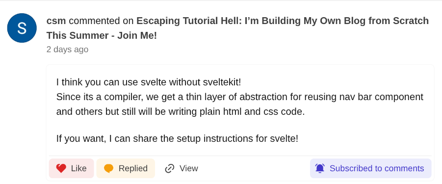
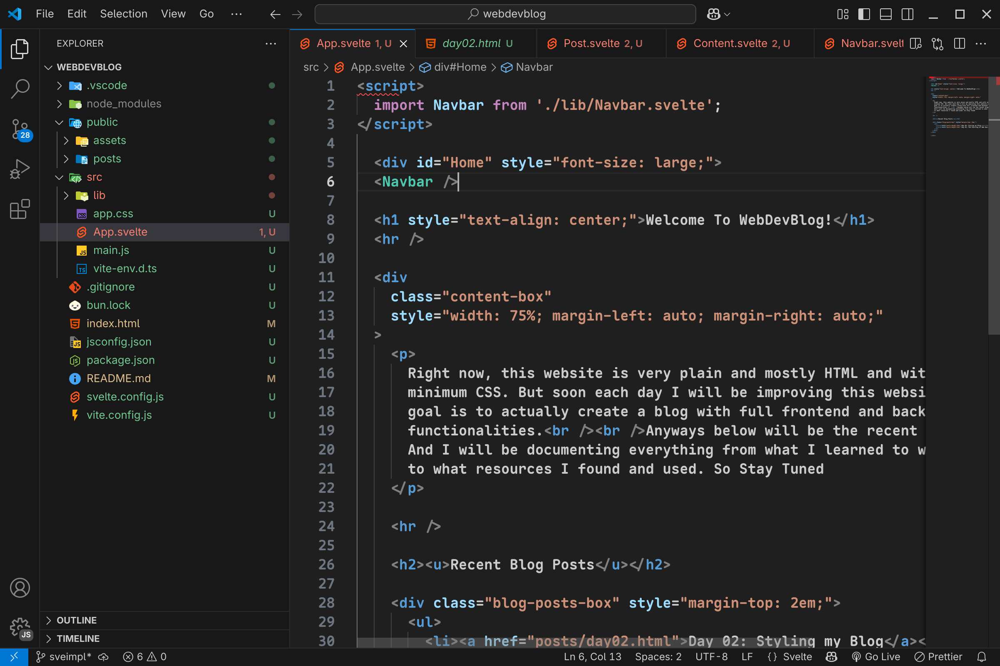
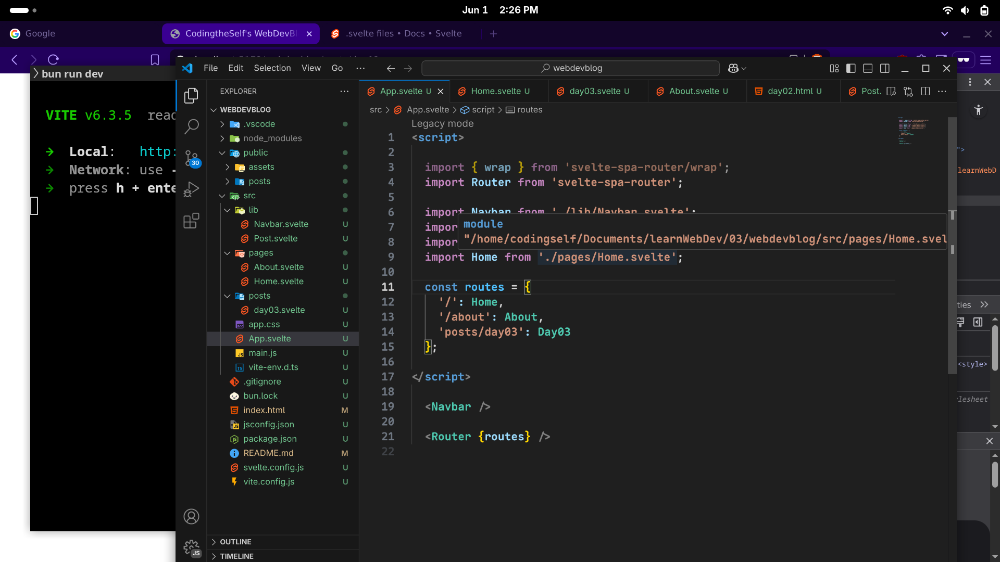

I want to integrate Svelte into my existing blog structure. As suggested by @csm in my previous post.

dev.to/csm18 comment
to modularize my HTML pages using Svelte components.
Try out client-side routing using svelte-spa-router.
Problems I Faced
First, I created the svelte project using Vite by running this code:
bun create vite svelteapp --template svelte
And then, copy the pages like index.html, about.html, posts.html to the public/ folder
I managed to break some parts of repetitive code into separate .svelte files and it worked fine. Though there was still lot of repetition like all the individual post html pages.

Coding App.svelte in VS Code
Then, I faced a major problem of Routing, I thought of doing the client-side routing to route my pages using the svelte-spa-router package
I added the package by: bun add svelte-spa-router
but Even after setting it up, I couldn't see anything in the browser — probably due to incorrect base path or missing hash in the URL.
Still working on making it render the correct component on navigation.

Trying to implement svelte-spa-router
What I've Learned
Learned about Svelte through it's Svelte Docs. And it is really nice and provides a lightweight alternative to ReactJS
I also learned that you can open live server from any directory to host your files and html by using npm or bun
for bun, run: bunx live-server, it will install some necessary things into your ~/.bun/install/cache/
for npm, run: npm install -g live-server, this will install the live-server tool globally and you can use it by running live-server
I also explored how to break my HTML structure into reusable components — like Navbar.svelte, Post.svelte, etc. Though I know it is sub-optimal as I still didn't modularize the individual html post pages
Slowly getting comfortable with Vite + Bun combo for faster builds and dev server.
If you are also stuck or experimenting with new tools, don't worry — it's all part of the process. Keep pushing!
And if you're learning Full-Stack Web Dev like me, connect with me: